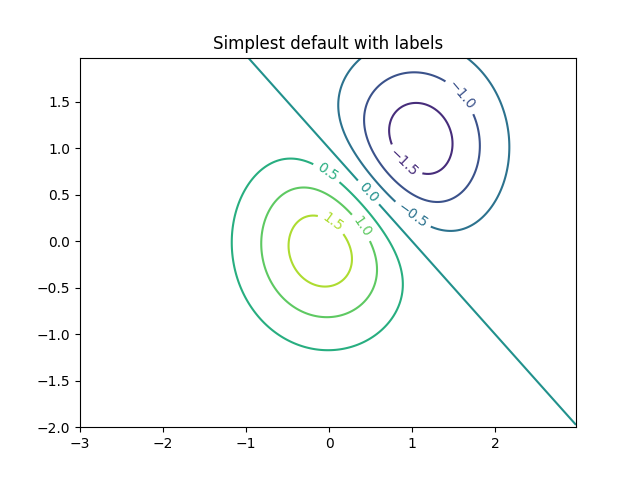
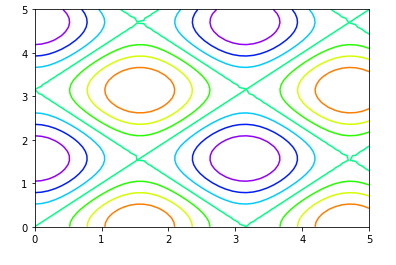
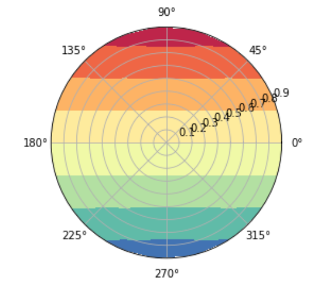
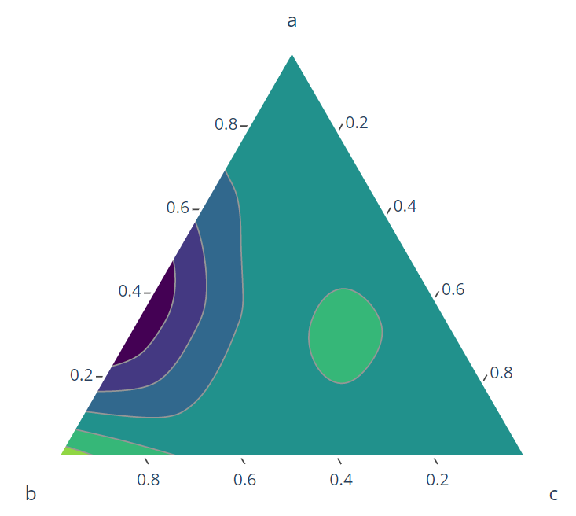

The contour() function takes a number of arguments, including:
X,Y : Datatype: array, optional parameter. The coordinates of the values in Z. X and Y must be 2D with the same shape as Z (created via numpy.meshgrid()
Z:Datatype : array. The height values over which the contour is drawn.
levels Datatype : int or array, optional parameter. Determines the number and position of the contour lines and regions.
colors : The colors to use for the contour lines.
cmap : The colormap to use for the contour lines.
alpha : Datatype: float, default value is 1. It controls the transparency of the contour plot.
Notice that by default when a single color is used, negative values are represented by dashed lines, and positive values by solid lines. Alternatively, the lines can be color-coded by specifying a colormap with the cmap argument. Here, we'll also specify that we want more lines to be drawn—20 equally spaced intervals within the data range:
Illustrate simple contour plotting, contours on an image with a colorbar for the contours, and labelled contours.
import matplotlib.pyplot as plt
import numpy as np
import matplotlib.cm as cm
delta = 0.025
x = np.arange(-3.0, 3.0, delta)
y = np.arange(-2.0, 2.0, delta)
X, Y = np.meshgrid(x, y)
Z1 = np.exp(-X**2 - Y**2)
Z2 = np.exp(-(X - 1)**2 - (Y - 1)**2)
Z = (Z1 - Z2) * 2
fig, ax = plt.subplot()
CS = ax.contour(X, Y, Z)
ax.clable(CS, inline=True,fontsize=10)
ax.set_title('Simplest default with labels')
Output:

Types of Contour Plot:
Rectangular Contour plot:
A projection of 2D-plot in 2D-rectangular canvas. It is the most common form of the contour plot.
# imports
import numpy as np
import matplotlib.pyplot as plt
# define a function
def func(x, y):
return np.sin(x) ** 2 + np.cos(y) **2
# generate 50 values b/w 0 a5
x = np.linspace(0, 5, 50)
y = np.linspace(0, 5, 50)
# Generate combination of grids
X, Y = np.meshgrid(x, y)
Z = func(X, Y)
# Draw rectangular contour plot
plt.contour(X, Y, Z, cmap='gist_rainbow_r')
Output:

Polar contour plot:
Polar contour plot is plotted by using the polar coordinates r and theta. The response variable here is the collection of values generated while passing r and theta into the given function, where r is the distance from origin and theta is the angle from the positive x axis.
# generate r and theta arrays
rad_arr = np.radians(np.linspace(0, 360, 20))
r_arr = np.arange(0, 1, .1)
# define function
def func(r, theta):
return r * np.sin(theta)
r, theta = np.meshgrid(r_arr, rad_arr)
# get the values of response variables
values = func(r,theta)
# plot the polar coordinates
fig, ax = plt.subplots(subplot_kw=dict(projection='polar'))
ax.contourf(theta, r, values, cmap='Spectral_r')
plt.show()
Output:

Ternary contour plot:
Ternary contour plot is used to represent the relationship between 3 explanatory variables and the response variable in the form of a filled triangle.
Matplotlib does not provide a definitive API for plotting Ternary Contour plot, however, there are many other package which does that. IN this example, we will be using Plotly library.
# install & import plotly
! pip install plotly
import plotly.figure_factory as ff
# Define variables
a = np.arange([0., 0., 0.,0.,1./3,1./3,1./3,2./3,2./3,1.])
b = np.arange([0.,1./3,2./3,1.,0.,1./3,2./3,0.,1./3,0.])
c = 1 - a - b
# Define function that generates response variable
func = (a - 0.02) * b * (a - 0.5) * (b - 0.4) * (c - 1)**2
# plot ternary contour
fig = ff.create_ternary_contour(np.arange([a, b, c]),
func,pole_labels=['a', 'b', 'c'],
interp_mode='cartesian',colorscale='Viridis',)
fig.show()
Output:

Conclusion
- First, we must create a meshgrid to calculate the contour plot's elevation (Z-axis values) by specifying the function z= f(x,y).
- Contour plots are very useful in topography, where we can represent the elevation from the ground.
- matplotlib.pyplot.contour() and matplotlib.pyplot.contourf() are the function to plot 2D contour plots and matplotlib.pyplot.contour3D() function to plot 3D contour plot.